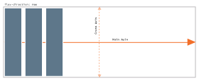

Use for: Layout as a lightweight and simpler replacement for a
full grid structure. Use to create grids (eg .row class using display:flex,
.span classes using either flex-basis: n or width: n). Use particularly for
menu layout, for small sets of content like site headers, footers &c.
Usefully, flex items can ignore source-order, allowing content to be
easily reordered, switched out or hidden at different media sizes.
Flexbox default behaviours
Understanding and leveraging the defaults will avoid common issues. So, for a flex container declaring:
.flex-container {
display: flex;
}Is the same as:
.flex-container {
display: flex;
flex-direction: row; /* 1 */
flex-wrap: nowrap; /* 2 */
justify-content: flex-start; /* 3 */
align-items: stretch; /* 4 */
}
.flex-item {
flex-grow: 0; /* 5 */
flex-shrink: 1; /* 6 */
flex-basis: auto; /* 7 */
order: 0; /* 8 */
}The element now has a flex context applied, which begets (line-by-line):
- The children of this element lay out on a horizontal main axis.
- The children will not wrap. They will be sized automatically according
to the size of their content; if that means their total width is larger
than the
.flex-containerwidth, they will break out of the container. - The children will be laid out consecutively (as they appear in the HTML) from the start of the main axis.
- They will stretch on the cross-axis to fill the available space.
- Every flex item will be automatically sized according to the size of its content.
- Every flex item will shrink __.
- Every flex item will have an automatic minimum width applied (same as
min-width: auto). - The items will all have the same
ordervalue, meaning they display in the same order as they appear in the HTML.

- Item 1
- Item 2
- Item 3
- Item 4
- Item 5
- Item 6
Equal height columns
Equal height columns, a common layout need, are available out-of-the-box.
The align-items property defaults to a value of stretch,
which forces the flex items to expand to fill the container along
the cross-axis.
- Item 1
- Item 2
- Item 3
- Item 4
- Item 5
- Item 6
Vertical centering
Vertical centering was difficult in CSS, and relied on either knowing the explicit height of a container + the item to place in the container, or by making use of specific layout hacks. Flexbox fixes this issue:
- Centred item
Vertical centering
This depends upon a simple, easily modifiable structure:
<body>
<header></header>
<main></main>
<footer></footer>
</body>To which following CSS is applied:
body {
min-height: 100vh;
display: flex;
flex-direction: column;
}
main {
flex: 1;
}The root element (<body> in this case) must be at least the height of the
viewport (using body, html { min-height: 100%; } will also work as an
alternative to vh units).
diplay: flex is applied, and the main axis set as vertical.
<header>/<footer> take on the size of their content, but <main>
is set to push out to fill the remaining space.